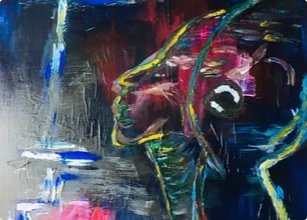
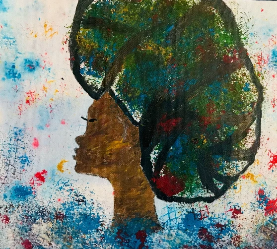
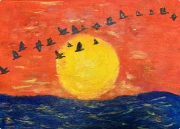
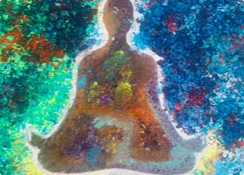
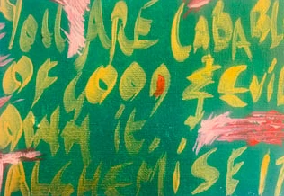
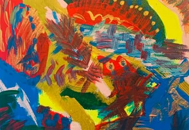
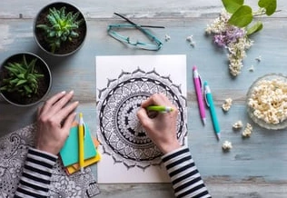

Art psychotherapy
In my practice as an art psychotherapist, I utilise art as a means of expression and communication.
Learn more£70.00 per hour
Book nowA warm, inclusive space in the heart of Manchester City Centre where all parts of you are welcome.
“Art heals what words cannot.”

In the land of my ancestors – Okpella in West Africa, muawé means welcome back or welcome home. It is a return to belonging, where your presence is honoured and your wholeness is embraced.
Muawé Healing Arts is a warm, inclusive space in the heart of Manchester City Centre where all parts of you are welcome.
Life’s experiences can leave us feeling disconnected or overwhelmed. At Muawé you are gently supported to explore your inner world, be seen and heard, and move toward healing with compassion and care.
I am an art therapist working psychodynamically, with a trauma-informed and attachment-based approach. I work with men, women and young people. Together, we explore your experiences with curiosity and care, supporting you to build insight, resilience, and a deeper connection to yourself.
My work is holistic, sometimes infusing animist psychology, shaped by my training with Daniel Foor. I weave in somatic practices to support reconnection with the body. I also practice ancestral lineage healing, creating space to tend to inherited patterns and draw on the strength of those who came before you. My yoga practice further informs my work, offering breath, movement, and presence as pathways to grounding and self-awareness.
At Muawé Healing Arts, your homecoming is honoured as you reclaim the parts of yourself that may have been lost or hidden. This is a space of remembrance, healing, and gentle transformation.
If you are seeking a compassionate space to explore, heal, and reconnect, I would be honoured to support you.
Take care:-)
I'm a qualified and certified HCPC and BAAT registered art psychotherapist. I specialise in ACE's trauma for young people and adults. I also practice attachment-based therapy.
I'm here to guide you through a journey of self-discovery and empowerment. Let's embark on this journey together and see where it takes us.

In my practice as an art psychotherapist, I utilise art as a means of expression and communication.
Learn more£70.00 per hour
Book now
Ancestral lineage healing
What is ancestral lineage healing? There are moments in life when something within us begins to reach back quietly.
Learn more£90.00 per session
Book now
Somatic healing yoga
Welcome, and thank you for being here. This is a gentle, one-to-one space for healing, reconnection, and coming home.
Learn more£120.00 per session
Book nowIn my practice as an art psychotherapist, I utilise art as a means of expression and communication. The purpose of using art is not for diagnosis but as a tool to help individuals manage distressing and perplexing emotions. I work with a variety of people, addressing a wide range of issues, including mental health difficulties, physical illness, neurological conditions, and behavioural challenges.
Art psychotherapy is a transformative therapeutic approach that leverages the power of art as a medium for expression and communication. Rather than using art for diagnostic purposes, it serves as a potent tool to assist individuals in navigating distressing and complex emotions. As a skilled professional, I work with a diverse range of clients, tackling various challenges such as mental health difficulties, physical illness, neurological conditions, and behavioural issues. Through art, my clients find a safe space to explore their inner world, fostering healing, self-discovery, and emotional well-being.
Ancestral lineage healing
Duration: 1 hour
There are moments in life when something within us begins to reach back quietly towards where we come from. A longing for understanding, connection and a sense of belonging that goes deeper than words.
I came to this work during one of those moments. When my dad sadly passed unexpectedly, I found myself in a space of deep confusion, grief, and the overwhelming chaos that can follow loss. In that time, I began searching for a way to make sense of what I was feeling, and of what seemed to live beyond my own individual experience. It was through this search that I discovered Ancestral Lineage Healing, an ancient, cross-cultural, non-religious way of tending to the threads that connect us across generations.
Ancestral Lineage Healing is a gentle, earth-honouring practice of reconnection. It invites us to meet our lineage with care and reverence, to acknowledge what has been carried, and to open to the blessings that may be waiting to come through. It does not require any specific belief system. Instead, it offers a human, grounded way of relating to those who came before us, across cultures and traditions.
This work can be especially supportive if you sense patterns that feel inherited, if you are navigating grief or transition, or if you simply feel a quiet pull to understand your place within a larger story.
At its heart, this is a relational practice. We begin by listening to what feels present, tender, and to what your lineage may be asking for. The process unfolds slowly and with care, at a pace that honours your nervous system and your lived experience. Nothing is forced. There is space here.
Like art therapy, this work also welcomes symbol, image, and the inner landscape as meaningful ways of knowing. Rather than searching for answers, we allow insight to emerge gently, with compassion and respect.
Ancestral Lineage Healing also sits alongside emerging understandings in epigenetics, which explore how lived experiences and stress may influence gene expression across generations. Research into transgenerational trauma suggests that what we carry can be both biological and psychological, though this is still an evolving field and not a replacement for medical care.
My approach is informed by training with Daniel Foor, PhD, founder of Ancestral Medicine, whose work centres psychological and cultural safety, inclusivity, and a deep respect for the living relationship between humans and the more than human world.
If something in you feels quietly drawn to this work, you are warmly welcome here. This is an invitation into a gentle, meaningful conversation with your lineage, one that may open pathways towards healing, blessing, and a deeper sense of belonging.
Somatic healing yoga
Duration: 1 hour
Welcome, and thank you for being here. This is a gentle, one-to-one space for healing, reconnection, and coming home to yourself with care, compassion, and warmth.
My work brings together somatic healing, yoga, and art therapy in a way that is soft, supportive, and deeply human. I am training at the School of Holistic Therapy under Simonetta Logan, and I also bring my yoga instructor qualification and art therapy practice into this heart led work.
Trauma is not only held in the mind; it can also live in the body as tension, holding, numbness, overwhelm, or a sense of being stuck. Somatic experiencing, developed by Peter Levine, supports the body in gently completing protective responses that may have been interrupted during overwhelming experiences. Babette Rothschild’s trauma informed approach also places safety, pacing, and choice at the centre of healing.
In session, we do not force or push. Instead, we listen closely to the body’s signals, notice sensation, breath, movement, and boundaries, and allow the nervous system to slowly settle at its own pace. This can create space for the body to soften, release stored stress, and begin to feel safer again.
I have experienced the calmer, more grounded and connective support of this work first hand. Research suggests that somatic experiencing may help reduce post traumatic symptoms and support nervous system regulation.
Art therapy can help with emotional expression, self-esteem, coping, and resilience, especially when words feel too difficult or too small for what you are carrying. When these approaches are woven together, they can offer a gentle path toward relief, insight, and healing through both body and creative expression.
Each session is shaped around you, your pace, and what feels manageable in the moment. We will begin with grounding and breath work, then move into gentle movement, body awareness, and creative exploration with colour, image, shape, metaphor, and mark making.
This is an invitation to explore what is present with kindness, rather than judgement. You do not need to arrive with the right words or the perfect starting point. Simply come as you are.
If your body is asking for softness, your heart is asking for care, or your creative self is asking to be heard, I would love to welcome you to book a session or begin a gentle conversation about what support feels right for you.
Want to hear first, or have an idea for a workshop? Send us a message and we'll keep you posted.
Ask to be told firstOriginal paintings from Muawé Healing Arts. Enquire to buy a piece.
Woman in a headwrap
Portrait in blue and magenta
Birds over a sunset sea
Seated figure in meditation
Interested in a piece? Get in touch and we'll arrange a viewing.
I am experienced in working with young people in special education settings and children in care with a range of complex needs such as ADHD. One young client who was diagnosed with ADHD had difficulties sitting still and engaging in one-to-one dialogue, told me after our first session that art therapy has given her the opportunity to see that she is not to blame for her difficulties. She engaged in 18 sessions and became confident and able to engage with other professionals in a calm manner. In managing emotional and trauma clinical work as Art Psychotherapist, I am part of multi-agency teams working collaboratively so that the people's wellbeing remain the focus of my service. I am fully committed to safeguarding and promoting the welfare of the people I work with. I undergo further training to keep abreast of changes.
Last week we had a core meeting for Room 3. It was mentioned in the meeting that Mum has engaged in your…
20 January 2024

There is something deeply human you may not have been given permission to hold, which is that you are capable of both good and evil. You are capable …
Read more
Coming Home to Yourself
Have you ever felt like healing was supposed to be something you could schedule? A neat hour between everything else, like …
Read more
Posted 20 Jan, 2024
Art has been a universal language of expression for centuries, transcending cultural and linguistic boundaries. It's a medium …
Read moreThere is something deeply human you may not have been given permission to hold, which is that you are capable of both good and evil. You are capable of tenderness and harm. You are capable of love and fear.
Not because you are broken, but because you are whole.
Healing does not begin with becoming better. It begins with becoming honest whilst sitting quietly enough to notice what lives within you, without turning away.
Many of the things you carry did not begin with you.
Patterns, fears, ways of protecting yourself, ways of closing down or reaching out. These can move through families, environments and generations. Ancestral healing is not about looking back with blame, but with awareness. It is about gently asking “what am I still carrying that I am now ready to release?” And just as importantly, “what do I want to keep?”
Nature can be a steady guide in this process.
Through an animist lens, everything holds presence and meaning. The ground beneath you, the trees, the water, the air around your body. You are not separate from these things. You are part of the same living system. A tree does not rush its growth. The seasons do not question their timing.
There is nothing in nature that asks for external validation to exist as it is. So what would it feel like to begin choosing yourself in that same way? Not loudly or forcefully. But consistently creating space for your mental health. Letting rest be part of your life, not something you earn. Allowing small acts of care to matter, choosing something beautiful, like holding a crystal that grounds you, enjoying food that nourishes you, even something as simple as vegan ice cream on a quiet afternoon.
These moments are not insignificant. They are how safety is built in the body. And the body is where so much of your healing lives.
Somatic practices, including yoga based approaches, invite you to listen to your body’s language, sensation, breath, tension, release. They offer a way to gently unwind what has been held, often for a very long time. You do not have to force this process. The body responds to presence more than pressure.
There are also parts of you that may not yet have words. This is where art therapy can open a door. Through colour, shape, texture, and movement, something internal begins to take form. Not to be judged, but to be witnessed. It is in this witnessing that something begins to shift.
Different healing modalities offer different entry points into the same truth in that you are allowed to return to yourself.
Through Muawé Healing Arts, you are invited to explore this in your own way. Ancestral healing, for understanding the deeper roots of what you carry. Art therapy, for expressing what sits beneath language. Yoga somatic healing, for reconnecting with your body and creating space within it.
There is no expectation to arrive a certain way. You do not need to be ready. You only need a willingness to be present with yourself. As you walk this path, you will meet your shadow.
The parts of you that feel uncomfortable. The anger, the grief, the fear, the instincts you were taught to suppress. These are not parts to remove, instead, they are parts to appreciate and alchemise.
Alchemising your darker aspects is a quiet, ongoing process. It is how anger becomes clarity. How fear becomes awareness. How grief becomes deeply nourishing.
Nothing is wasted when it is met with attention and self compassion.
And something else begins to happen, often without you noticing at first. You soften in a way that makes you more real, more grounded, less driven by reaction and more guided by presence.
Others can feel this too. You do not need to explain it or convince anyone. Healing is not something you impose, you are not here to force or convert people.
Even in religion, where there is often talk of guiding others toward truth, it is worth asking quietly, is that truly what GOD asks of us? Or is it enough to live in a way that reflects care, presence, integrity, and trust that others will find their own path when they are ready?
Your role is not to change the world all at once. It is to tend to your part of it. And as you do, your healing becomes something others can sense. Not as an instruction, but as a possibility, a glimpse that something softer, steadier, more connected is available.
So let this be a simple invitation. What would healing look like for you, if it did not have to be rushed? What feels ready to be acknowledged, even gently? What kind of support would feel safe enough for you to explore?
If something in you is curious, you are welcome to step into that exploration through Muawé Healing Arts. There is no single path, only different ways of meeting yourself with care.
You do not have to become someone new. You are allowed to return to who you are, with more awareness, compassion, and choice.
Coming Home to Yourself
Have you ever felt like healing was supposed to be something you could schedule?
A neat hour between everything else, like just another item on the list?
You might have tried that. You might have found that it didn’t quite work.
The kind of healing your body is asking for may not fit into a calendar slot at all.
It might be quieter. Slower. And already within you.
Think about this:
In your life, have you ever noticed moments when your body told you something before your mind did?
A tightness in your chest. A heaviness in your shoulders. A sense of calm when you finally paused?
For many people, these signals get ignored. You tell yourself to keep pushing through
But what if you could start to listen to your inner wisdom.
When do you feel most tired (physically, emotionally, or mentally), what happens when you try to rest, and do you feel like part of you is always “on” even when slowing down?
You may be carrying more than you realise, which is not a sign that something is wrong with you. Instead, it’s a sign that you’ve been doing a lot for a long time.
What would it feel like to return to yourself?
Imagine pausing, just for a moment, and asking yourself honestly how you actually feel. Not how you think you should feel, or what’s expected of you. But what’s really there beneath the surface.
Imagine creating without pressure. Letting things take shape in their own time. Moving your body without forcing it. Resting because you need it.
What if your body wasn’t something to fix, but something to listen to and be in a relationship with?
And as you sit with that, notice if there is a part of you that already knows this is possible? A quieter part, perhaps, that’s been there all along waiting, gently, for permission to slow down?
Healing often begins with a small act of attention. A breath. A pause. A moment of noticing.
What’s one small thing you could offer yourself today just to listen a little more closely?
Maybe it begins with something simple.
Taking three slow, steady breaths, and actually feeling them as they move through you.
Or placing a hand on your chest, softening for a moment, and quietly asking, “What do I need?” and giving yourself the space to hear whatever comes.
Perhaps it’s sitting still for five minutes, doing nothing at all. No fixing, no planning, no proving. Just being here, as you are.
What feels like the easiest place to begin?
If any of this feels familiar, you don’t have to stay disconnected.
You don’t have to keep pushing through.
You can come home to yourself gently, slowly, and with care.
Would you like to explore what that could look like for you?
Book a gentle, no-pressure conversation to see if working together feels right.
There’s no need to have it all figured out. You only need to begin by listening.
Take care:-)
Posted 20 Jan, 2024
Art has been a universal language of expression for centuries, transcending cultural and linguistic boundaries. It's a medium that allows individuals to communicate their thoughts, emotions, and experiences without the need for words. In recent years, the therapeutic benefits of art have gained recognition, and Art Psychotherapy has emerged as a powerful tool for healing. In this article, we will explore the transformative power of creative expression through Art Psychotherapy and delve into how individuals, under the guidance of professionals like Victoria Ashadu, can find healing, self-discovery, and emotional well-being.
Art has the unique ability to tap into the depths of the human psyche. When words fail to convey complex emotions or traumatic experiences, art steps in as a means of expression. Whether through painting, drawing, sculpture, or other creative forms, individuals can externalize their internal worlds and gain insight into their thoughts and feelings. Art Psychotherapy, often referred to as art therapy, is a form of psychotherapy that utilizes the creative process of making art to improve and enhance the physical, mental, and emotional well-being of individuals of all ages. It is based on the belief that the creative process and self-expression can be therapeutic and healing.
Art Psychotherapists, like Victoria Ashadu, are trained professionals who guide individuals through the art-making process in a therapeutic context. They provide a safe and supportive environment where clients can explore their thoughts and emotions without judgment. The role of the therapist is not to interpret the artwork but to facilitate the client's exploration and self-discovery. One of the significant areas where Art Psychotherapy has proven highly effective is in addressing trauma, including Adverse Childhood Experiences (ACEs). Traumatic events can leave lasting emotional scars that impact an individual's mental health and overall well-being. Art therapy offers a non-confrontational and non-verbal way to process and heal from trauma.
Art Psychotherapy sessions typically involve the creation of artwork and subsequent discussion or reflection on the art's meaning. The therapist may ask open-ended questions to encourage self-reflection and exploration. Through this process, clients can gain insights into their emotions, behaviors, and coping mechanisms. Art therapy allows individuals to express and regulate their emotions effectively. For those who struggle to verbalize their feelings, art provides a safe outlet for pent-up emotions. It can help clients identify and name their emotions, which is a crucial step in emotional regulation and management.
Engaging in the creative process and witnessing the tangible results of one's efforts can boost self-esteem and self-confidence. This is particularly valuable for individuals who have experienced trauma or struggle with self-worth issues. Art therapy encourages creative thinking and problem-solving skills. Clients learn to approach challenges with an open mind, finding multiple solutions to a problem—a valuable skill that can be applied in various aspects of life.
For those who have difficulty expressing themselves verbally, art therapy can improve communication skills. It helps individuals become more adept at conveying their thoughts and emotions, which can positively impact their relationships and interactions with others. Art Psychotherapy is not just about addressing emotional pain; it's also a tool for personal growth and development. Clients can discover new facets of themselves, set and achieve goals, and gain a deeper understanding of their inner world.
Art therapy is particularly effective for vulnerable populations, including survivors of domestic violence, individuals with complex needs, and young people. Victoria Ashadu's expertise in working with these populations has shown that art therapy can provide a sense of empowerment and hope. Victoria Ashadu's practice in Manchester takes a holistic approach to healing, recognizing the interconnectedness of mind, body, and soul. Her commitment to promoting emotional well-being and healthy mental health routines aligns with the principles of art therapy.
One of the distinguishing features of Victoria Ashadu as an Art Psychotherapist is her commitment to continuous learning and growth. She stays up-to-date with the latest developments in the field to provide the best possible support to her clients.
In conclusion, Art Psychotherapy offers a profound avenue for healing, self-discovery, and emotional well-being. Under the guidance of professionals like Victoria Ashadu, individuals can harness the transformative power of creative expression to address trauma, improve communication, boost self-esteem, and foster personal growth.
If you're in Manchester and seeking a trusted and compassionate Art Psychotherapist, Victoria Ashadu is here to support you on your healing journey. To learn more about her services and begin your transformative experience, please visit her Contact Form. Your path to well-being starts here.
In the heart of Manchester City Centre.
Peter House, Oxford Road, Manchester
M1 5AN
Tell us a little about what you're looking for and we'll get back to you to find a time that suits you.
If you need urgent help, call NHS 111, or 999 in an emergency.